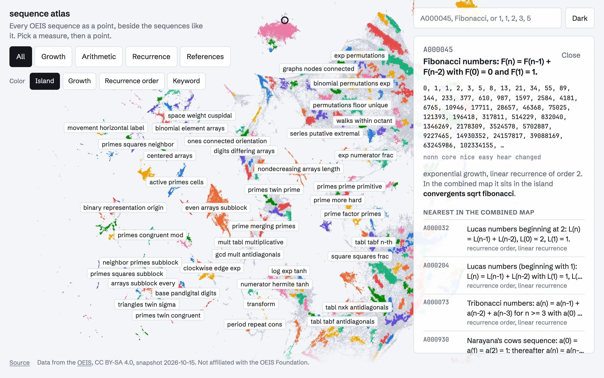

The OEIS has about 390,000 integer sequences and the only way to move between them is by cross reference or by searching for terms. I wanted to see the whole thing at once. Sequence Atlas lays out every sequence that isn't marked dead and has at least ten terms, 376,817 of them at the October 2026 snapshot, as one point each, so that sequences which behave alike sit together. There are five maps: growth, arithmetic structure, linear recurrence, the cross-reference graph, and all four combined. Pick a point, or search by A-number, name, or a run of terms, and the panel shows the sequence, the island it sits in, and its twenty nearest neighbors with the features that put them close.
Turning a sequence into numbers
Every sequence becomes 69 numbers, computed from its first 80 terms, since the ones past that add noise. The growth features fit log of the terms against log n, against n, and against n log n, and keep the slopes and residuals, so a polynomial, an exponential, and a factorial each light up a different fit. There are also the last ratio of consecutive terms and its trend, the fraction of negative, zero, and repeated terms, and how many sign changes there are. The arithmetic features reduce every term mod 2 through 10 and 16 and record the entropy of the residues, the share of the commonest one, and the shortest period, plus the fraction of primes, squares, and powers of two, the gcd, and whether adjacent terms are coprime. For recurrences I run Berlekamp-Massey over the terms mod the Mersenne prime 261 - 1 to get the order of the shortest linear recurrence, up to 12, and take finite differences until they vanish to get a polynomial degree, up to 10. A Rust tool does all of this for the whole OEIS in 17 seconds.
The reference map doesn't come from the terms at all. The cross references form a graph with the sequences as nodes, and I take a 32-dimensional spectral embedding of its normalized adjacency, regularized the way Amini and others suggest by giving every pair of nodes a sliver of an edge, which pulls the thousands of small components into the whole instead of letting them each claim an eigenvector. Keyword flags and the log of the degree ride along as extra columns.
Laying it out
Each family's columns are standardized and run through UMAP with 15 neighbors, using a nearest-neighbor graph I compute once with NNDescent and reuse for the neighbor lists. Islands come from HDBSCAN on a sample of 120,000 points in the finished layout, with the rest assigned to the nearest labeled points, since the density clusters barely change past that sample and the full run takes many times longer. Each island gets up to three words from the names of its members, scored by how much more often a word or bigram appears inside the island than outside. That is where "convergents sqrt fibonacci" comes from, and it's a fair description of the neighborhood.
For each neighbor the panel names the two features where both sequences sit away from the corpus mean and close to each other. For the Lucas numbers next to Fibonacci that's recurrence order and the linear-recurrence flag, which is the right answer and also a little deflating, because it means the map mostly knows they're both order 2 recurrences with the same growth, not that one is the other's companion. The reference map knows that part.
Serving 376,817 points
A layout is a binary file: a count, four floats of bounds, then every point as a pair of 16-bit integers, which is 1.5 MB per family and renders as one WebGL draw call. Picking a point under the cursor uses a 256 by 256 grid bucket over the quantized coordinates so a hover only looks at a few cells. Everything per sequence, the terms, the neighbors, and the feature explanations, lives in shards of 100 sequences packed into one object per kind, and a Cloudflare Worker turns a shard request into a byte-range read from R2. Search goes to a D1 database with FTS5 indexes over names and terms, and a term query like 1, 1, 2, 3, 5 is a phrase match.
The OEIS gains a few hundred sequences a week, so a scheduled job runs every Monday. It recomputes features from the current dump, keeps the existing layouts frozen, and places each new sequence at the distance-weighted mean of its 15 nearest old sequences in feature space, in the island most of them belong to. Then it rebuilds the neighbor lists and shards, uploads what changed under a new dated prefix, loads the standby search database and flips a pointer so no query lands mid-import, and publishes the manifest last. Data URLs carry the manifest's build digest, so a republished file is a new URL and the year-long caches never serve a stale shard next to a new layout. A full re-embed, which moves every point, is a manual run I expect to do rarely.